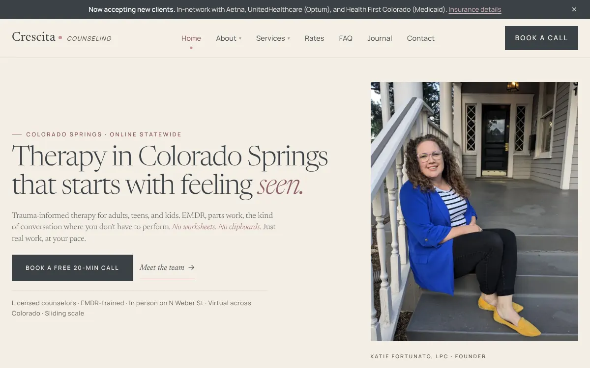
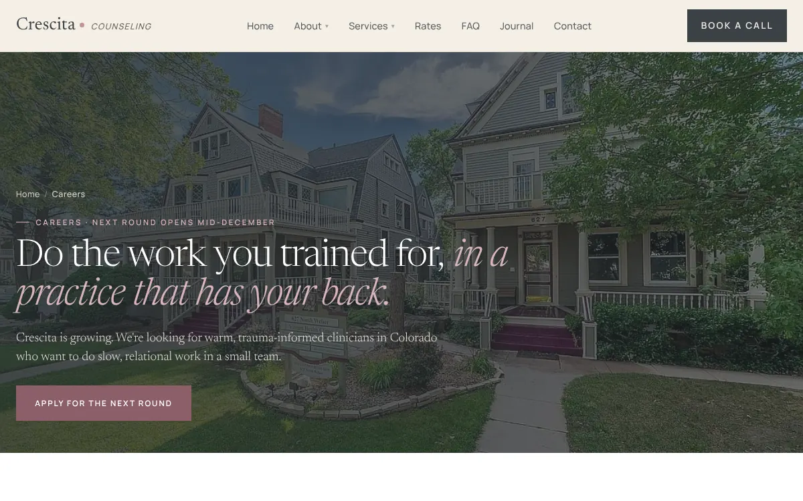

On October 26, Katie Fortunato sent me an email that opened with “I hired two new therapists!” Two lines down: “I have received like 3 or more new referrals from the website!!”
Katie owns Crescita Counseling, a trauma-informed group practice in a Victorian house in the Old North End of Colorado Springs. In May it was two therapists, Katie and Alissa Brown, on a Squarespace site. By November it was five, with two new profiles waiting on headshots.
The website didn’t hire anyone. Katie did. But hiring only works if new clients keep calling after the new therapist starts, and that part is the website’s job. Here’s what we did, in order, and what the numbers say so far.
Off Squarespace
In May I rebuilt the site by hand and moved it to Cloudflare. Every page got structured data, so Google reads Crescita as a counseling practice at 627 N Weber Street and not as a generic business with a contact form. Analytics went in on day one, which is the only reason there are numbers to show you now.
A few weeks later I fixed something Squarespace had never let her fix. The site answered at two addresses, with and without the www, and Google had been flagging one of them as a duplicate since the previous October. One redirect rule, and that was gone.
In early July, Katie wrote: “I have been receiving requests!”
Room for a third therapist
When Ebony Trotter joined in June, she got a full page, not a line on the team page. Her own bio and photo, her specialties written the way clients search for them, and the same structured data that tells Google she’s a licensed counselor at this practice. Her page is linked from the footer of every page on the site, and crescitacounseling.com/ebony goes straight to it. That’s the address for a business card.
The redesign, and a listing nobody clicked

The redesigned site went live on October 5. The same day, Katie made me a manager on her Google Business Profile.
The listing was there, but it wasn’t sending anyone to the website: one to three clicks a month from June through September. I filled in her services, updated the photos and cleaned up the rest of the profile.
The journal started at the same time, about one post a week, each one answering something people type before they book. “Anxiety or Burnout? How to Tell the Difference.” “Questions to Ask a Therapist Before You Book.”
October, in numbers
From Crescita’s Google Analytics and Business Profile reports for October 2026.
About half of all visits now start on Google. Seven came from links in ChatGPT. The contact form was started 22 times.
The page that surprised us

The careers page was mostly there so the job post had somewhere to live. Then therapists started applying through it. Katie, a few days after the hires: “I’ve received a few good responses from it.” She kept it up, with a note that the next round opens in mid-December.
What hasn’t moved yet
Total activity on the Google listing hasn’t grown much. It’s been 40 to 60 interactions a month since June. What changed in October is where those people went next.
And the search I most want for her isn’t paying off yet. “EMDR therapist near me” showed Crescita 502 times in October, and nobody clicked. Google already thinks she belongs in that search. Getting picked from it is November’s work.
A group practice website has two audiences: clients, and the next therapist you hire.
If you run a group practice
Give every clinician a real page, with their own address, linked from every page on the site. Put a careers page up before you need it. Check that your Google listing actually sends people to your website, and look again a month later. Then publish something every week or two that answers what clients ask on the consult call.
Most of that is unglamorous. Crescita went from two therapists to five while it was happening.